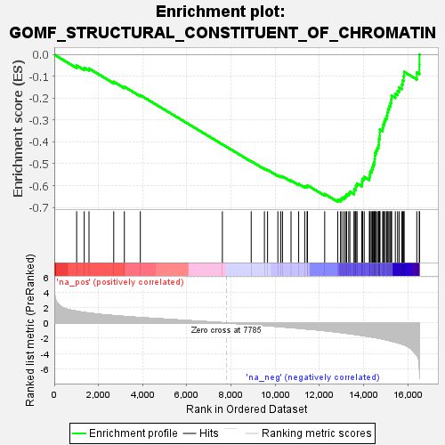
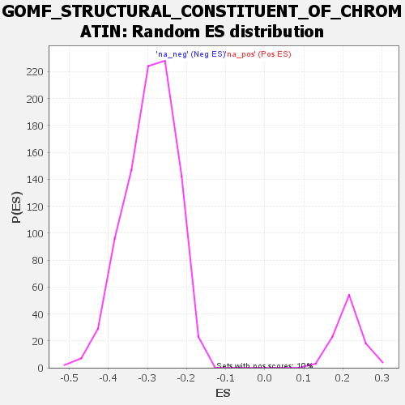

| | | Dataset | all_genes |
| Phenotype | NoPhenotypeAvailable |
| Upregulated in class | na_neg |
| GeneSet | GOMF_STRUCTURAL_CONSTITUENT_OF_CHROMATIN |
| Enrichment Score (ES) | -0.6743346 |
| Normalized Enrichment Score (NES) | -2.3023016 |
| Nominal p-value | 0.0 |
| FDR q-value | 0.0 |
| FWER p-Value | 0.0 |
Table: GSEA Results Summary

Fig 1: Enrichment plot: GOMF_STRUCTURAL_CONSTITUENT_OF_CHROMATIN
Profile of the Running ES Score & Positions of GeneSet Members on the Rank Ordered List
| SYMBOL | RANK IN GENE LIST | RANK METRIC SCORE | RUNNING ES | CORE ENRICHMENT | | 1 | H2BW2 | 1012 | 1.537 | -0.0499 | No |
| 2 | H3-3A | 1355 | 1.380 | -0.0604 | No |
| 3 | CENPA | 1571 | 1.297 | -0.0637 | No |
| 4 | H2AZ1 | 2690 | 0.960 | -0.1244 | No |
| 5 | H2AZ2 | 3171 | 0.852 | -0.1472 | No |
| 6 | MACROH2A2 | 3894 | 0.700 | -0.1858 | No |
| 7 | MACROH2A1 | 7607 | 0.036 | -0.4111 | No |
| 8 | H2AC18 | 8912 | -0.208 | -0.4887 | No |
| 9 | H3-3B | 9510 | -0.330 | -0.5225 | No |
| 10 | H4C11 | 9651 | -0.364 | -0.5283 | No |
| 11 | H4C8 | 10118 | -0.469 | -0.5531 | No |
| 12 | H4C14 | 10252 | -0.501 | -0.5574 | No |
| 13 | H2BC9 | 10328 | -0.517 | -0.5581 | No |
| 14 | H2AX | 10714 | -0.609 | -0.5769 | No |
| 15 | H4C1 | 11059 | -0.692 | -0.5926 | No |
| 16 | H2BC21 | 11333 | -0.770 | -0.6034 | No |
| 17 | H4C13 | 11441 | -0.796 | -0.6039 | No |
| 18 | H2AC25 | 11458 | -0.802 | -0.5989 | No |
| 19 | H3C4 | 12237 | -1.014 | -0.6385 | No |
| 20 | H2BC12 | 12827 | -1.214 | -0.6652 | Yes |
| 21 | HMGA1 | 12953 | -1.258 | -0.6634 | Yes |
| 22 | H4C12 | 13014 | -1.279 | -0.6574 | Yes |
| 23 | H2BC17 | 13107 | -1.313 | -0.6531 | Yes |
| 24 | H3C6 | 13182 | -1.345 | -0.6475 | Yes |
| 25 | H2BC14 | 13229 | -1.363 | -0.6401 | Yes |
| 26 | H2BC3 | 13325 | -1.395 | -0.6354 | Yes |
| 27 | H4C2 | 13377 | -1.412 | -0.6279 | Yes |
| 28 | H2BC13 | 13571 | -1.489 | -0.6285 | Yes |
| 29 | H2BC11 | 13574 | -1.491 | -0.6174 | Yes |
| 30 | H3C12 | 13646 | -1.524 | -0.6102 | Yes |
| 31 | H2AJ | 13647 | -1.525 | -0.5988 | Yes |
| 32 | H1-2 | 13704 | -1.548 | -0.5906 | Yes |
| 33 | H2BC10 | 13921 | -1.634 | -0.5914 | Yes |
| 34 | H2BC5 | 13928 | -1.637 | -0.5795 | Yes |
| 35 | H4C5 | 13957 | -1.648 | -0.5688 | Yes |
| 36 | H3C3 | 14026 | -1.683 | -0.5603 | Yes |
| 37 | H2BC18 | 14259 | -1.793 | -0.5610 | Yes |
| 38 | H4C9 | 14285 | -1.801 | -0.5490 | Yes |
| 39 | H2BC7 | 14296 | -1.805 | -0.5360 | Yes |
| 40 | H3C7 | 14369 | -1.845 | -0.5265 | Yes |
| 41 | H3C1 | 14400 | -1.861 | -0.5144 | Yes |
| 42 | H1-5 | 14434 | -1.875 | -0.5023 | Yes |
| 43 | H2BC26 | 14486 | -1.895 | -0.4912 | Yes |
| 44 | H1-10 | 14497 | -1.904 | -0.4775 | Yes |
| 45 | H2BC4 | 14509 | -1.907 | -0.4639 | Yes |
| 46 | H3C14 | 14517 | -1.912 | -0.4499 | Yes |
| 47 | H2AC8 | 14573 | -1.939 | -0.4387 | Yes |
| 48 | H3-7 | 14620 | -1.970 | -0.4267 | Yes |
| 49 | H2AC7 | 14673 | -1.992 | -0.4149 | Yes |
| 50 | H3C10 | 14689 | -2.001 | -0.4008 | Yes |
| 51 | H3C11 | 14693 | -2.002 | -0.3860 | Yes |
| 52 | H4C16 | 14727 | -2.025 | -0.3728 | Yes |
| 53 | H2AC4 | 14730 | -2.025 | -0.3577 | Yes |
| 54 | H4C4 | 14732 | -2.027 | -0.3425 | Yes |
| 55 | H2AC11 | 14862 | -2.108 | -0.3345 | Yes |
| 56 | H3C2 | 14885 | -2.125 | -0.3199 | Yes |
| 57 | H4C3 | 14934 | -2.159 | -0.3066 | Yes |
| 58 | H2BC6 | 14976 | -2.181 | -0.2927 | Yes |
| 59 | H2AC17 | 15046 | -2.223 | -0.2802 | Yes |
| 60 | H2AC19 | 15071 | -2.247 | -0.2648 | Yes |
| 61 | H2BC15 | 15107 | -2.270 | -0.2499 | Yes |
| 62 | H3C13 | 15151 | -2.304 | -0.2352 | Yes |
| 63 | H2AC12 | 15216 | -2.355 | -0.2214 | Yes |
| 64 | H2AC20 | 15254 | -2.386 | -0.2058 | Yes |
| 65 | H2AC15 | 15264 | -2.392 | -0.1884 | Yes |
| 66 | H2BC8 | 15434 | -2.515 | -0.1797 | Yes |
| 67 | H2AC16 | 15535 | -2.604 | -0.1663 | Yes |
| 68 | H2AC13 | 15604 | -2.656 | -0.1505 | Yes |
| 69 | H2AC6 | 15731 | -2.781 | -0.1372 | Yes |
| 70 | H1-4 | 15765 | -2.814 | -0.1181 | Yes |
| 71 | H1-3 | 15816 | -2.869 | -0.0996 | Yes |
| 72 | LMNTD2 | 15832 | -2.879 | -0.0789 | Yes |
| 73 | H1-0 | 16406 | -4.223 | -0.0820 | Yes |
| 74 | H2AC21 | 16523 | -5.817 | -0.0454 | Yes |
| 75 | H3C8 | 16526 | -6.120 | 0.0004 | Yes |
Table: GSEA details [plain text format]

Fig 2: GOMF_STRUCTURAL_CONSTITUENT_OF_CHROMATIN: Random ES distribution
Gene set null distribution of ES for GOMF_STRUCTURAL_CONSTITUENT_OF_CHROMATIN